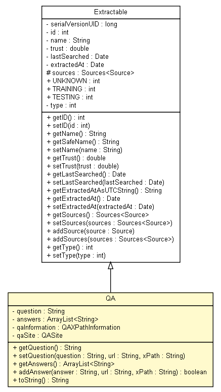

tud.iir.knowledge
Class QA

java.lang.Object
 tud.iir.knowledge.Extractable
tud.iir.knowledge.QA
tud.iir.knowledge.Extractable
tud.iir.knowledge.QA
- All Implemented Interfaces:
- java.io.Serializable
public class QA
- extends Extractable
- See Also:
- Serialized Form
|
Method Summary |
boolean |
addAnswer(java.lang.String answer,
java.lang.String url,
java.lang.String xPath)
|
java.util.ArrayList<java.lang.String> |
getAnswers()
|
java.lang.String |
getQuestion()
|
void |
setQuestion(java.lang.String question,
java.lang.String url,
java.lang.String xPath)
|
java.lang.String |
toString()
|
| Methods inherited from class tud.iir.knowledge.Extractable |
addSource, addSources, getExtractedAt, getExtractedAtAsUTCString, getID, getLastSearched, getName, getSafeName, getSources, getTrust, getType, setExtractedAt, setID, setLastSearched, setName, setSources, setTrust, setType |
| Methods inherited from class java.lang.Object |
clone, equals, finalize, getClass, hashCode, notify, notifyAll, wait, wait, wait |
question
private java.lang.String question
answers
private java.util.ArrayList<java.lang.String> answers
qaInformation
private QAXPathInformation qaInformation
qaSite
private QASite qaSite
QA
public QA(QASite qaSite)
getQuestion
public java.lang.String getQuestion()
setQuestion
public void setQuestion(java.lang.String question,
java.lang.String url,
java.lang.String xPath)
getAnswers
public java.util.ArrayList<java.lang.String> getAnswers()
addAnswer
public boolean addAnswer(java.lang.String answer,
java.lang.String url,
java.lang.String xPath)
toString
public java.lang.String toString()
- Overrides:
toString in class java.lang.Object